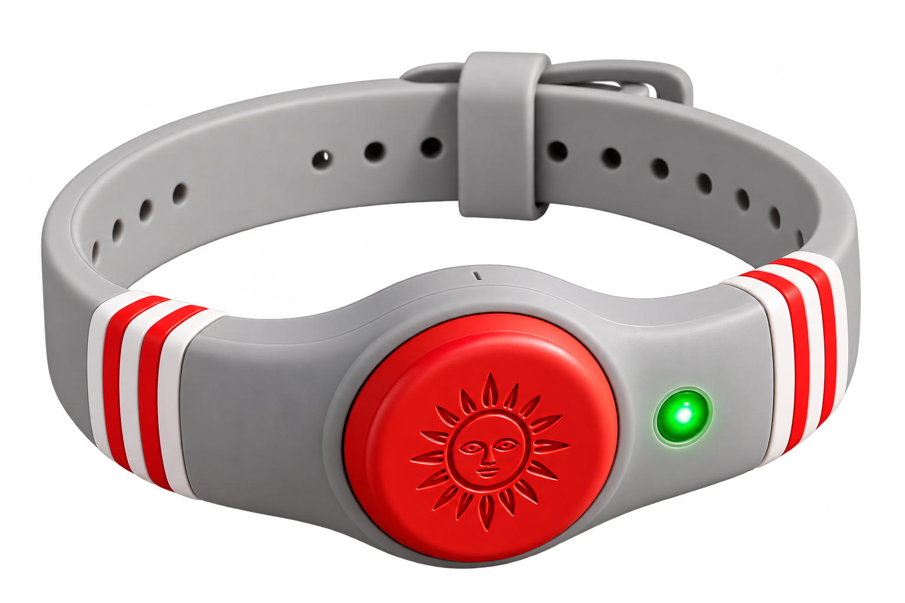
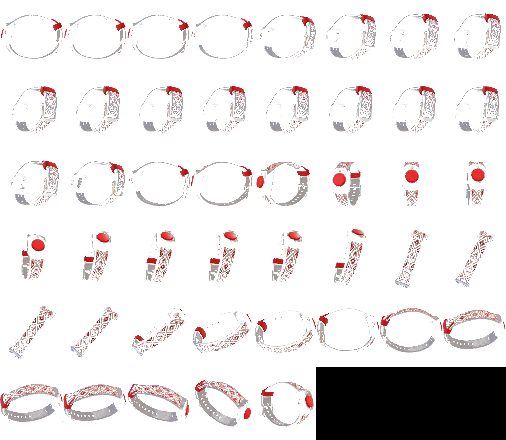

Presiona el botón
El usuario activa la solicitud de ayuda mediante el botón central de la pulsera.
YANAPAY · TECNOLOGÍA CON RAÍCES
“Su independencia, tu tranquilidad.”
Una propuesta tecnológica diseñada para facilitar la solicitud de ayuda de los adultos mayores mediante un sistema de alerta sencillo.

CAJAMARCA · YANAPAY

El funcionamiento previsto
El usuario activa la solicitud de ayuda mediante el botón central de la pulsera.
La pulsera está diseñada para activar una señal de comunicación ante una emergencia.
El sistema contempla comunicar el aviso mediante SMS al contacto registrado.
Una propuesta que prioriza el botón físico y una respuesta fácil de reconocer.
Diseñada para informar a un contacto mediante el sistema GSM/SMS contemplado.
Pensada para adultos mayores y para aportar tranquilidad a sus familias.